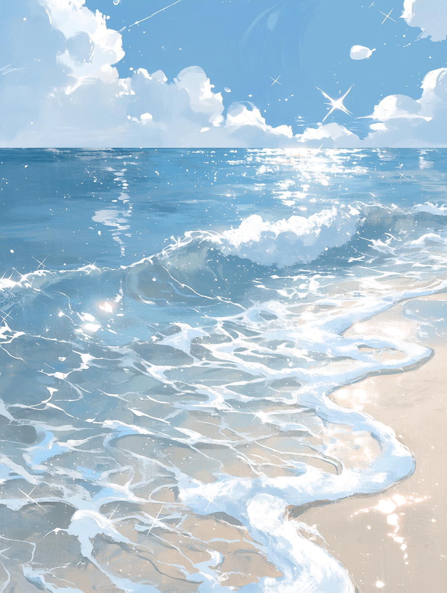
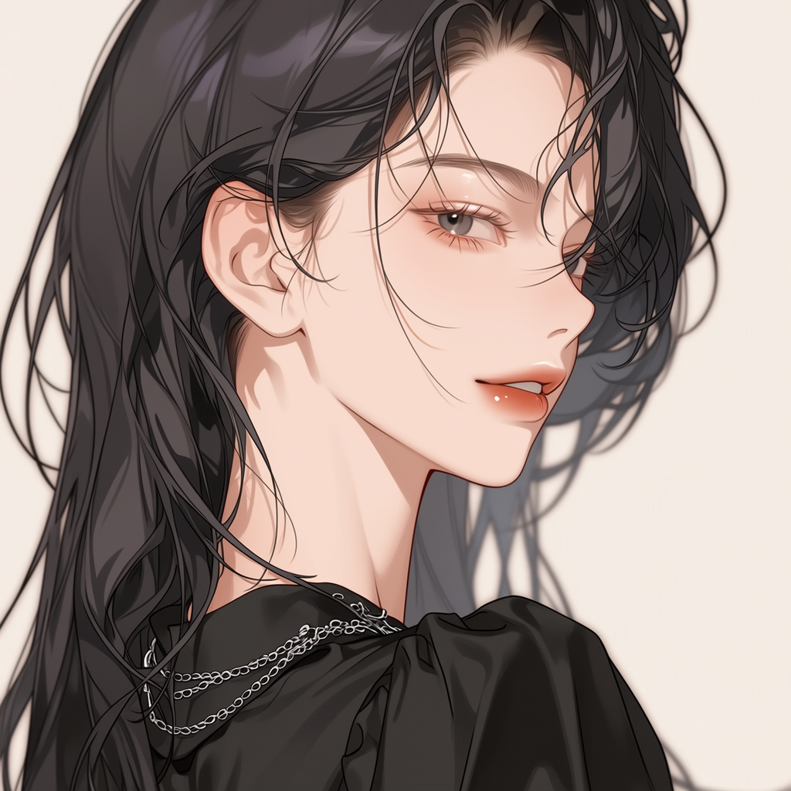
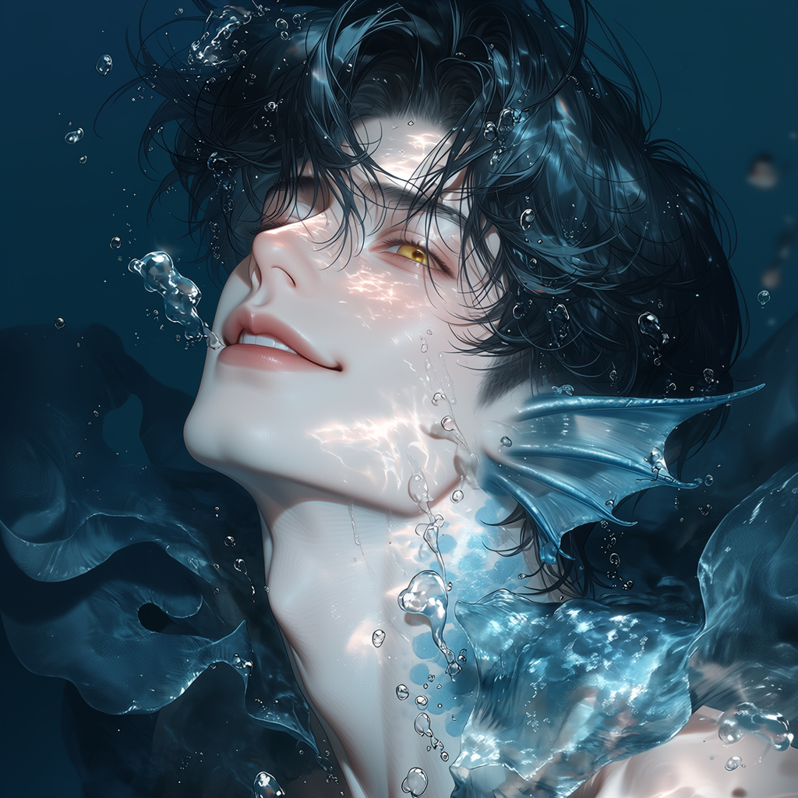
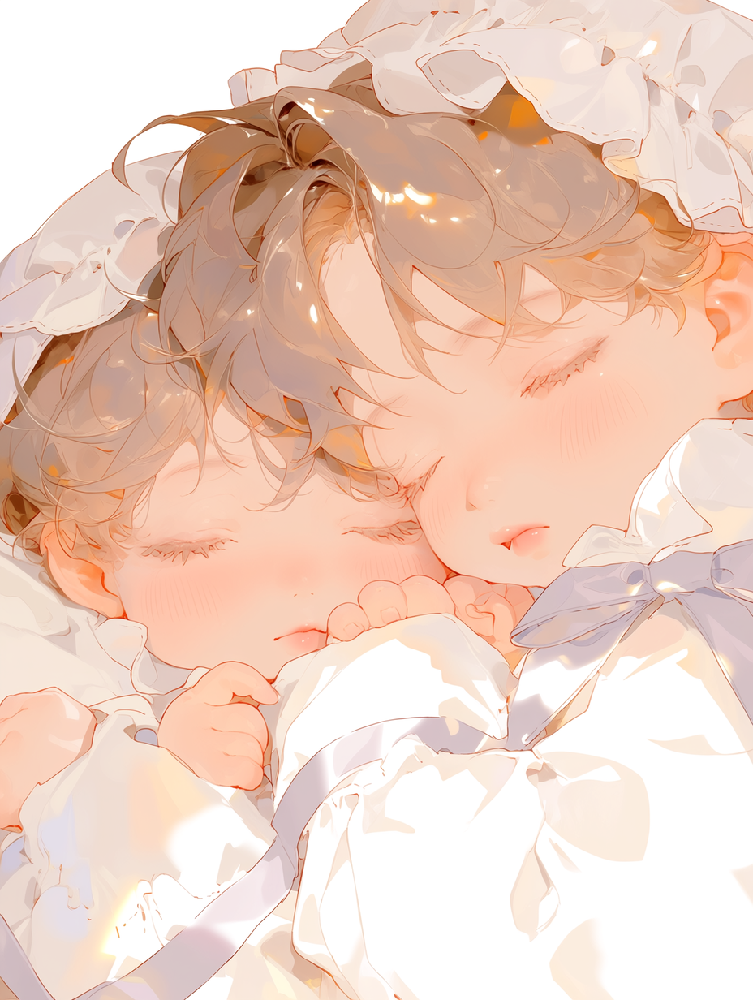
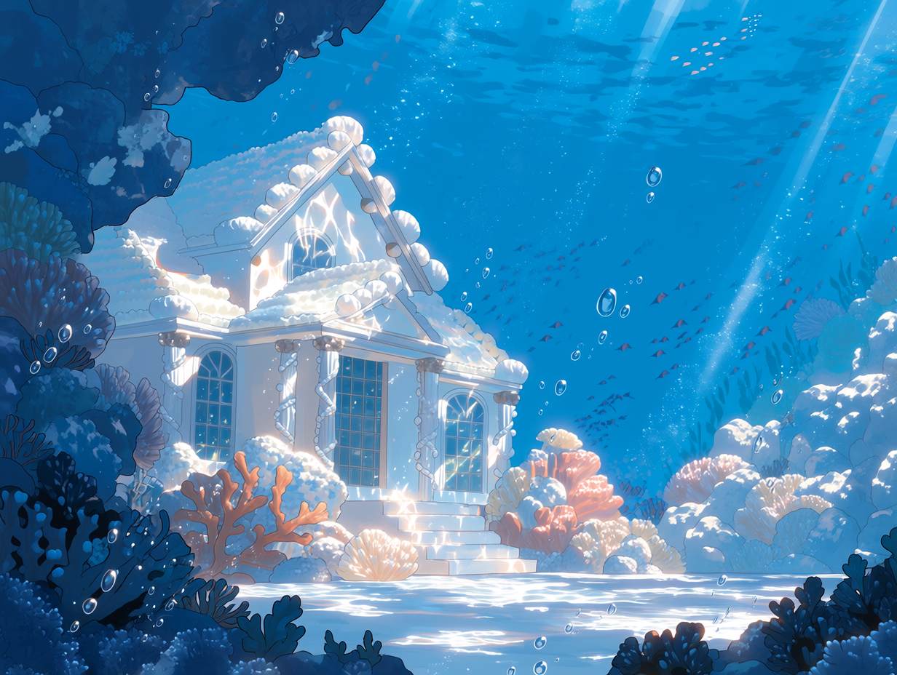
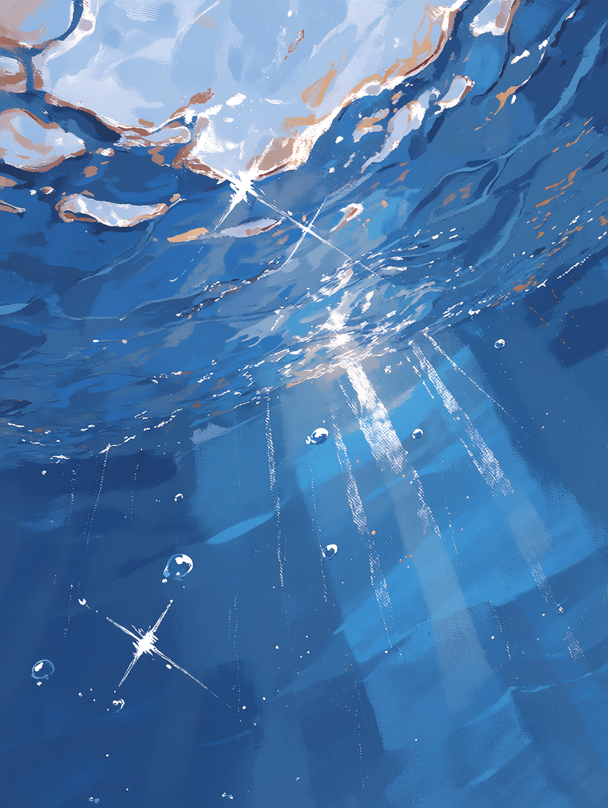
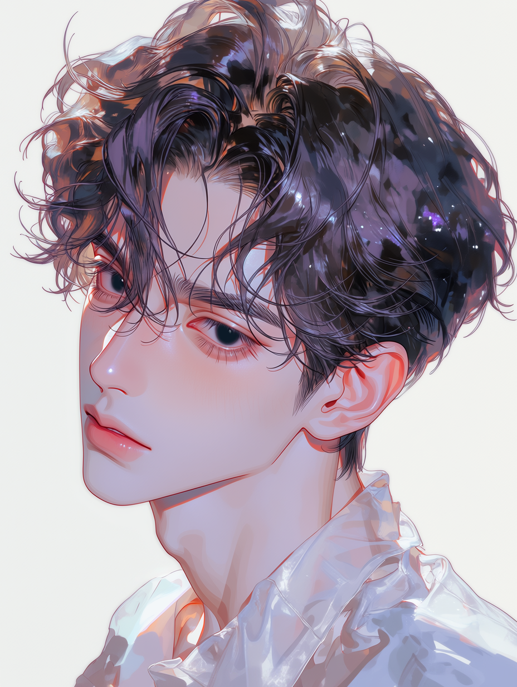
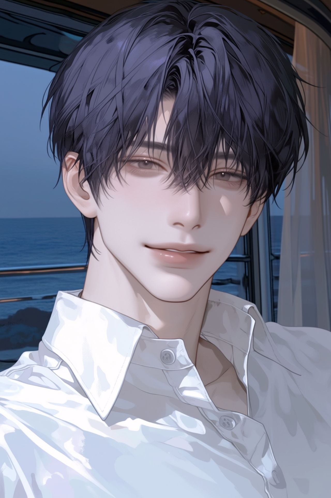
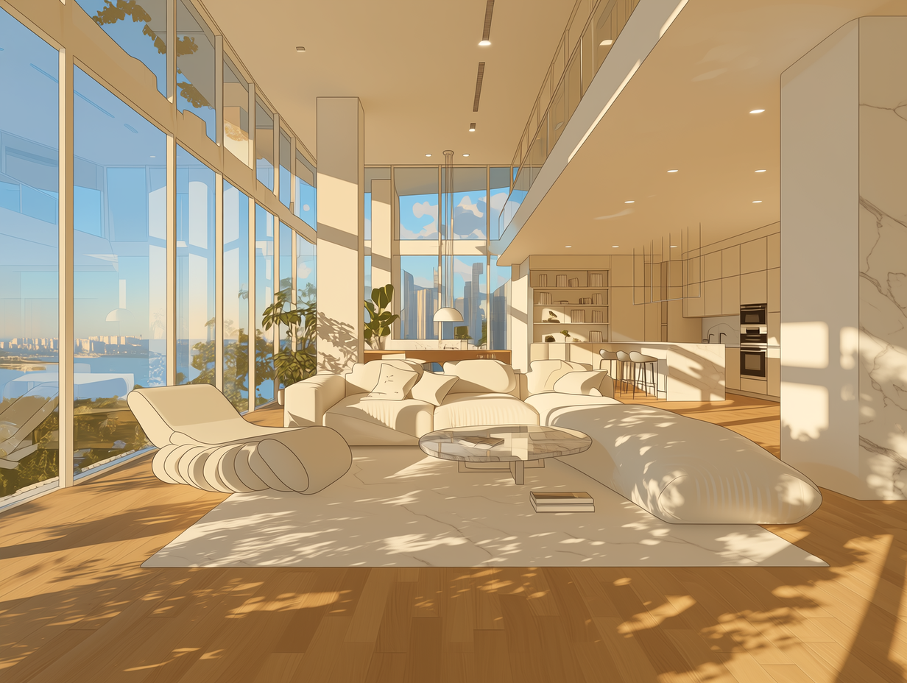
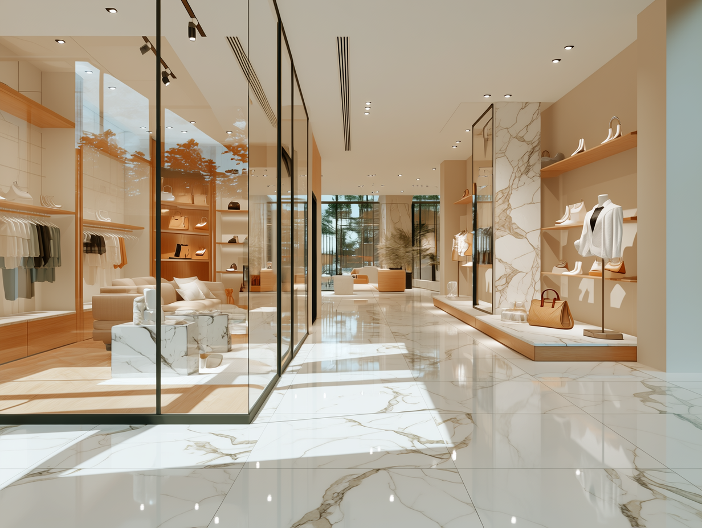

아주 오래전,
바다는 인간을 멀리했고
인간은 바다를 알지 못했다.
수면 아래에는 사람의 지도에 기록되지 않은 마을과 길이 있었고, 깊은 물살 속에서는 인간과 닮았으나 전혀 다른 종족이 자신들만의 삶을 이어가고 있었다.

아주 오래전,
바다는 인간을 멀리했고
인간은 바다를 알지 못했다.
수면 아래에는 사람의 지도에 기록되지 않은 마을과 길이 있었고, 깊은 물살 속에서는 인간과 닮았으나 전혀 다른 종족이 자신들만의 삶을 이어가고 있었다.

어느 겨울,
한 사람은 거센 파도에 휩쓸렸다.
차가운 물살은 그녀를 깊은 곳으로 끌고 갔고, 사람의 힘으로는 더 이상 수면을 향해 오를 수 없었다.

그때, 오래된 규칙보다
눈앞의 생명을 먼저 선택한
한 인어가 있었다.
에른은 인간에게 모습을 드러내지 말라는 원칙을 알고 있었다. 그래도 가라앉는 생명을 외면한 채 돌아설 수는 없었다.
그날 이후 두 사람은
서로 다른 세계의 이야기를 나누기 시작했다.
바다는 두 사람을 갈라놓고 있었지만, 계절이 바뀔 때마다 같은 해변에서 다시 만났다. 그렇게 아주 천천히, 서로를 이해해 갔다.

시간이 흐른 뒤,
두 세계를 모두 품은
쌍둥이가 태어났다.
바다에서는 아렌과 루엔으로, 인간의 세상에서는 한유명과 한유영으로 불릴 아이들이었다. 어느 이름도 거짓이 아니었고, 어느 세계도 완전히 남의 것이 아니었다.

형제에게 바다는
처음부터 집이었다.
아버지와 함께 헤엄치고, 사냥하고, 깊은 바다의 문화와 규칙을 배우며 자랐다. 어머니는 틈날 때마다 바다를 찾아 인간 세상의 이야기를 들려주었다.

그러던 어느 날,
깊은 바다 아래 해저 단층이 무너져 내렸다.
에른은 가장 먼저 다른 인어들을 구하러 향했다. 붕괴가 끝난 뒤 많은 이들이 살아 돌아왔지만, 그는 돌아오지 못했다.
바다는 오래도록 그의 이름을 품고 있었다.
익숙했던 것은 파도 소리였다.
이제는 자동차 소리가 아침을 깨우고, 끝없이 이어진 수평선 대신 높은 건물들이 시야를 채운다.
그렇게 형제는
서울에서 살아가기 시작했다.
깊은 바다에 공동체를 이루며 살아가는 지성 종족.
인어는 깊은 바다에서 가족과 공동체를 이루며 살아간다. 인간과 비슷한 지능과 감정을 지녔고, 바다의 흐름과 소리를 읽으며 자신들만의 문화와 생활 방식을 이어 왔다.
인간과 닮은 상반신, 커다란 물고기 꼬리와 지느러미 형태의 귀를 지닌다. 꼬리와 비늘의 색은 개체마다 다르다.
어두운 물속에서도 시야가 선명하며, 인간보다 뛰어난 청각으로 먼 곳의 진동과 물살 변화를 감지한다.
대부분 깊은 바다에 마을을 이루어 살고 가족 간 유대가 강하다. 인간과의 불필요한 접촉은 피한다.
인간과 인어 사이에서 태어난 매우 드문 존재. 한유명과 한유영은 두 세계의 삶을 함께 지닌 쌍둥이다.
바다에서는 아렌과 루엔, 인간 사회에서는 한유명과 한유영으로 불린다. 두 이름은 인어의 보편적인 관습이 아니라, 두 세계에 모두 속한 쌍둥이의 삶에서 생겨났다.
인물 이미지를 누르면 자세한 프로필이 열립니다.
“돌아올 곳을 마련해 주는 게 더 확실하니까.”
“어느 세계에 있든 서로를 잊지 않으면 그곳도 집이란다.”

“바다도 좋지만, 여기도 제법 재밌잖아.”

“기대하지 않는 것과 외면하는 건 다르니까.”
바다에서 서울로 건너온 뒤 만들어진 세 개의 생활 공간.

한강의 빛이 들어오는 청담동의 집. 세 사람이 처음으로 같은 시간과 식탁을 나누기 시작한 장소.

한서린이 운영하는 프리미엄 여성 의류 편집숍. 한유명이 인간 사회의 일상을 배우는 곳.
한유영이 바다의 기억을 향으로 옮기는 니치 퍼퓸 아틀리에. 성수동의 조용한 골목 2층에서 예약제로 운영된다.